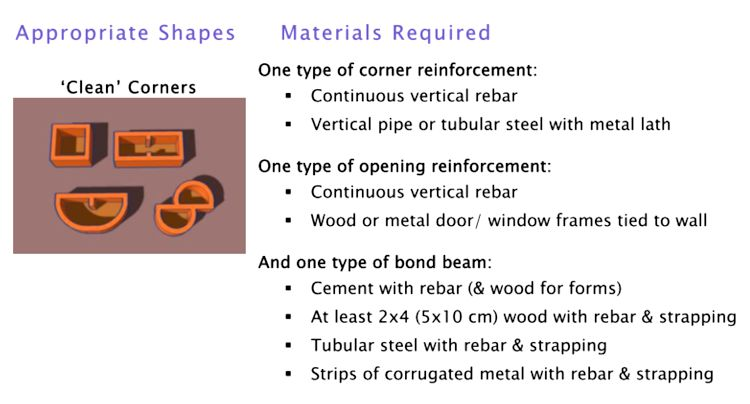

Choosing Shelter Plans
CHOOSING SHELTER PLANS FOR HAZARDOUS AREAS
EARTHBAG HOW-TO’S
Patti Stouter, Owen Geiger and Kelly Hart
Earthbag is an inexpensive building method that can work well with many available resources. This guide explains how to choose simple plans
that use locally available materials and can fit a culture as well as resist hazards well.
Copyright 2010 Patti Stouter and www.earthbagbuilding.com
In many parts of the world disaster-relief shelters need to be able to survive earthquakes and hurricanes. Structures should also be able to function well during the different seasons. Yet shelters must be inexpensive and quick to build. They must also be structures that can be removed when the displaced population has found new homes.
Haiti’s Hazards:
- High earthquake risk
- High hurricane risk Long rainy season
Earthbag is an inexpensive but very strong building technique that does not require much imported material. But, like the adobe block techniques it resembles, it requires some understanding to make wise plan choices. Materials available to use in buildings should determine their shape, wall height, and types of roofing supports.`
The strength of an earthbag wall is, like adobe, related to its shape. Compact and symmetrical layouts reduce damaging quake forces.i Curving walls are the strongest shapes if little or no reinforcement is available. Straight walls can be strengthened with corner or internal bracing, a strong bond beam, and/or earthbag buttresses.
Traditional roofs with small overhangs can be made hurricane resistant by fastening them securely to heavy earthbag walls and using heavy metal straps on top of corrugated metal. Temporary tarp roofs on earthbag walls may be fastened well enough to survive high winds by carefully nailing them on all sides to wood plates embedded in the walls. Keeping shelter floors dry during rainy seasons or flooding is often a more pervasive problem than withstanding intermittent hurricanes. Earthbags could be used as a foundation for less waterproof construction, or to form a seat wall inside a fabric shelter to keep the floor dryer.
Build Cheaply with What You Have
Using the materials that can be purchased cheaply or scavenged from debris may keep your costs down. All of these can be used for earthbag construction, many providing reinforcement needed to resist earthquakes and hurricanes:
Metals:
- ½” (12 mm) diameter rebars, 2- 5’ (60 cm- 1.5 m) lengths
- 4. (120 cm) or longer long pieces of metal pipe
- 1-1/2” x 4” (4-10 cm), or other size, hollow rectangular section steel tubing
- 8. 12” (20- 20cm) wide strips of corrugated metal roofing at least 4’ (120 cm) long hurricane straps, door or shutter hinges, security doors, window frames, nails plasterer’s galvanized lath or galvanized chicken wire
Wood:
- 2. 4” (5- 10 cm) diameter poles
- 2x4s, 2x6s or 2x8s (5x 10, 15, or 20 cm) lumber
- plywood scraps 8- 12” (20- 30 cm) wide wood or wicker shutters
Plastics:
- Tarpaulins,
- poly or nylon fishnet
- plastic plasterer’s mesh, baling twine
Natural materials:
- Soil that includes some clay gravel
- vetiver thatch, reeds
- rice hulls or straw for insulation
- branches for wattle
Necessities:
- 50. poly bags 18 x 30” (46 x 76 cm)
- 4-point barbed wire (or possibly 2- point) light gage
- 6 mil plastic 30” (80 cm) wide to cover top of wall
- Poly or nylon strapping Poly or nylon twine
The keys to safe earth buildings (including earthbag shelters) are good quality construction, robust layout, and good seismic reinforcement.ii
Good quality construction involves building walls plumb, using strong bags not exposed to the sun for more than a few weeks before covering, and using good building soils on good foundation soil. Soil can be looser than for adobe, but must not be too silty, have too much sticky clay, or be only sand.
Earthbag walls are basically oversized adobe units with increased compressive strength from the tamping process and greater horizontal tensile strength from the matrix of bags and embedded barbed wire. But in areas with high risk of earthquakes, extra reinforcement should be added to earthbags.
Reinforcement of earthbag for seismic areas involves applying principals that have proven successful to protect adobe buildings.iii The bases of walls, corners, and the tops of walls are the most important areas to reinforce.
One successful type of adobe wall reinforcement involves cement plastered wire mesh forming an exterior upper ring and corners and intermittent
columns. Other strategies use vertical and horizontal ropes or rods of bamboo. Since few buildings in warm climates have a reinforced concrete footing, it may also be important in seismic regions to tie the building together close above its base of stone or rubble footings.
Since earthbag already has significant horizontal strength from barbed wire, rebar or strapping or rope can be important in uniting earthbag buildings vertically. A well- integrated bond beam can also cap and stiffen the walls.
The materials that have the most impact on the shape of earthbag structures are cement and steel. Rebar hammered through bag layers or sections of pipe and metal lath securely fastened vertically at corners can allow simpler ‘clean’ corners without exterior buttressing. This reduces the amount of soil and bags needed as well as the construction time. The chart below explains some of the construction and shape alternatives:

If little or no cement and steel are available, curving walls will provide the greatest strength. Temporary structures with fewer reinforcements must be carefully shaped.
Shaped for Strength
Building shapes that are compact rather than elongated more easily resist earthquake forces. Those proportioned like squares or circles are stronger than long and narrow or bent shapes.iv
Curved shapes also are much stronger than straight. Simple circles are easier to build than rectangles with corners. But circular buildings may not be culturally acceptable. Sometimes for transitional housing they are considered too odd, or too difficult to extend with additions.
For temporary shelter use the reduced need for reinforcing may make curved shapes a good choice if displaced people can accept them.
Small curves at corners or 45 degree angles can also strengthen walls. Walls that curve at a radius of between 3’ and 15’ (1m and 4.5 m) are much stronger than straight walls.
Even slightly bowed walls with corner buttressing have been shown to have strength similar to circular walls.v
Earthbag has been widely used to make earthen domes, both with cement stabilization or without. These are both hurricane and earthquake resistant. But in wet climates unstabilized domes require sophisticated waterproofing and careful maintenance. If leaks develop in earthbag domes that were built without cement stabilization, they can become saturated and fail. Although they are very inexpensive, they require skill to build. Because of maintenance issues, earthen domes may not be the best choice for emergency shelter in rainy climates.
If long or bent shaped structures are needed where little reinforcement material is available, separate compact shapes can create safer structures. Lighter walls and roofing or temporary tarps can quickly be added between separate earthbag structural rooms.
Basic Dimension Standards
Although the type of shape can be selected based on materials available, safe dimensions must still be used. Robust layout for earth construction means reasonable wall heights and openings spaced out well from each other and from corners.
Simple shelters of 15” (38 cm) wide bag walls can be built to 7’- 9’ (2.1 – 2.7 m) wall heights.
Walls must have at least 36-39” (1 m) from each opening to a corner. If shelters have a single opening in each wall, the walls must be at least 8’ (2.4 m) long to house a 24” (60 cm) wide window. They must be 8’6” (2.6 m) long for a 30” (75 cm) wide doorway.
Lintels that are integrated into the bond or ring beam above are very strong. If separate from the bond beam, lintels should extend into the walls at least 16” (40 cm) each side of an opening.vi
Earthquake resistance can also be improved by the type of grading used. A structure with a little excavation behind and a little fill in front is safer than a structure either cut deeply into a slope or placed right on the edge of a steep slope. vii
Wall Heights
A cement bond beam can allow earthbag walls to be built lower. For good earthquake resistance it is important that this ring beam be continuous, bridging the doorway.viii Thus the height of the doorway and composition of the bond beam determine the height of the shelter walls. These diagrams assume a door height of 6’8” or 203 cm.
 Shelter plans for areas with low earthquake risk may include gable walls of earthbags. Small shelters with shed roofs are simple to build with earthbag walls that step down under the roof eaves.
Shelter plans for areas with low earthquake risk may include gable walls of earthbags. Small shelters with shed roofs are simple to build with earthbag walls that step down under the roof eaves.
But it takes a cement bond beam to unite a moderately slanting wall. If cement is not available, in high seismic risk areas it is best if this kind of stepped wall is limited to a very shallow slope that doesn’t rise more than 2 bag courses or 10” (25 cm) total.
Because windows must also fit beneath the bond beam, low shelter eaves walls are really only appropriate in areas that have comfortable climates, and do not require ventilation for comfort during most of the day.
Because shelters can have walls lower than standard doorway heights, aid organizations may want to plan structures like that shown above. Separate wall segments with lightweight connections spanning window or door openings are not very well braced. In an earthquake this type of wall will tend to vibrate more at the segment ends and is
more likely to fail.
Roofing Options
Shelter shapes may also be influenced by types and lengths of roof support and covering materials available.
Permanent roofs are always preferable for long-term earthbag building use. They should include 12” (30 cm) overhangs if possible. This protects the earth plaster, helps to direct
rainfall away from the wall base, and reduces maintenance requirements significantly.
Roofs can be securely fastened to scrap wood nailer plates or wood 2×4 (5×10 cm) top plates strapped to upper bag courses or to metal straps or bolts embedded in a concrete bond beam.
The tarpaulin roofing options shown below can be used in wet climates if they include the tarp overhanging (or an additional plastic strip) at least 24” (60 cm) down the wall to protect the top of the earthbag wall from being repeatedly soaked.
Spaces Shape Families
At the time of construction shelters may be overcrowded and optimal layouts will seem irrelevant. But shelters frequently become transitional or permanent housing, and if they are appropriately designed will enable healthy family structure when overcrowding lessens. Doubling site layouts with tents between sturdier earthbag structures may allow a more useable spacing to develop when some residents begin to return to repaired homes or find alternate living quarters.
 Many cultures in tropical areas are highly group- oriented. Family units are usually extended, often to include neighbors and friends. The relationship between the entrances of these rooms will either strengthen or weaken social structure during a camp residence.
Many cultures in tropical areas are highly group- oriented. Family units are usually extended, often to include neighbors and friends. The relationship between the entrances of these rooms will either strengthen or weaken social structure during a camp residence.
In many warm climate regions yards are more clearly defined than building walls. Much of life is lived outdoors. Home may be defined as the space within walls or hedges. Open spaces that are perceived as ‘owned’ will be kept safer and be better used. But shelters built at IDP or Internally Displaced Persons camps may not be able to have walls to separate outdoor areas.
Shelters can still be arranged to provide milder signals that serve well to define boundaries between groups and provide a sense of ownership of the space between them. The sides of units can be located to function as informal boundaries to adjacent spaces.
Aid organizations may favor multiple room shelter units for greater economy of walls, but with multiples it may be harder to ensure that rainfall drains away from entry porches, or that residents can use the outdoor space as their culture requires.
Residents will probably have strong preferences for some unit shapes and some types of cluster layout over others. They will have to subject their families to the social interactions determined by these. They must be included in the decision-making. Black and white sketches of these concepts are included in the appendix for survey use.
Find out how many rooms are needed for the culture. Duplex units that can be united in future and possibly expanded may be more practical for extended use than separate units. Simple shelter rooms that are 7’ or 8’ x 12’ (2.1- 2.4 m x 3.7 m) or more can also be sub-divided for maximum use with tarps to provide more privacy.
The location of doors is important in most cultures. The entrance sequence and thresholds between public and
private spaces are frequently emphasized. Doors may be arranged to limit views into the house. Doors or porches or front walls may be ornamented in small homes.
People who spend much time outside often orient their buildings and yards very carefully to take advantage of breezes or sunlight. Compass directions sometimes have symbolic associations that are still important to displaced people.
In cool climates many peoples have doorways that face toward the equator in an easterly direction to allow sunlight to warm the dooryard and interior in the morning during the coolest part of the day.
In warm climates people are careful to avoid facing their doorway to the west, where afternoon sun will tend to overheat both entry area and building. Doors and window openings in hot areas may catch frequent breezes and face away from the equator.
Even in basic shelters the way that the entrances of separate shelter relate to each other can have a great impact for good or for ill on the relationships of people staying in them. In warm regions the front door area may be where people sit and work.
Grouping shelters to face the same direction or to face each other can enable stronger relationships. If small groups of shelters have entrances that face toward each other this can enable the growth of a few closer relationships in a very stressful environment. It can also reinforce a sense of a shared outdoor space that may actually become safer than spaces that seem impersonal.
Providing shared services that are centrally located is another way to unite people. It may allow the informal public surveillance that is the basis of safe neighborhoods around the world.
Each of the unit groupings and layouts shown on the pages that follow will influence the interaction of the camp in important ways. Residents should be able to influence the camp arrangements.
Haitian Building Shapes:
Some of the multiple unit groupings that follow may be preferred to others. The back to back duplex resembles the Kay style common in the south of Haiti. The side by side duplex resembles the Creole style common in the north and in other parts of the Caribbean. The clustered quad is a modified Creole style.
Often 10- 12 Haitian men who are neighbors share work in their fields.
Plans, Details and Advice
The website at www.earthbagstructures.com provides a comparison chart listing shelter plans using earthbag that are available for free in different room arrangements and unit sizes. Their respective limitations and requirements are listed, including the amounts of soil and materials required by each shelter type.
The techniques for construction and types of materials used are only mentioned in this booklet. Details are more fully described and discussed on the website. Those who are new to earthbag construction should carefully read the information at www.earthbagstructures.com, and possibly search the site at www.earthbagbuilding.com for descriptions of techniques and processes as well as videos.
If you are involved in or planning an earthbag project for Haiti, request a membership in the Earthbag Structures private shelter blog to discuss issues and get additional help.